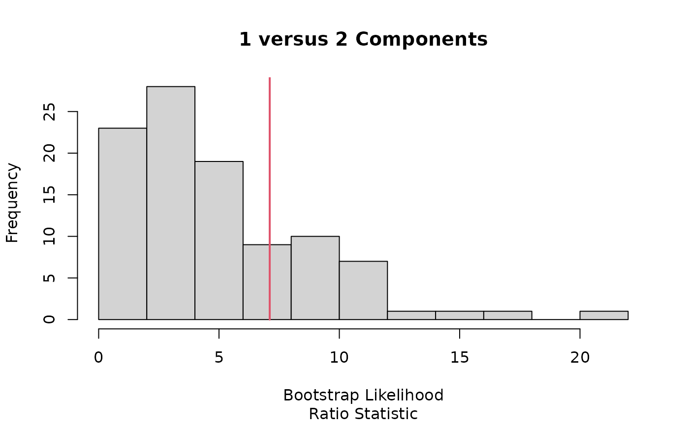

Computes the optimal number of gaussian components for log mean count
optimal.comp.RdThe number of gaussian components is determined using the using parametric bootstrap
Examples
logmean = rnorm(100)
optimal.comp(logmean,sig=0.05,max.comp=4,max.boot=100)
#> number of iterations= 54
#> number of iterations= 16
#> number of iterations= 69
#> number of iterations= 36
#> number of iterations= 12
#> number of iterations= 22
#> number of iterations= 42
#> number of iterations= 51
#> number of iterations= 7
#> number of iterations= 113
#> number of iterations= 3
#> number of iterations= 16
#> number of iterations= 23
#> number of iterations= 64
#> number of iterations= 18
#> number of iterations= 98
#> One of the variances is going to zero; trying new starting values.
#> One of the variances is going to zero; trying new starting values.
#> One of the variances is going to zero; trying new starting values.
#> number of iterations= 9
#> number of iterations= 5
#> number of iterations= 68
#> number of iterations= 21
#> number of iterations= 32
#> number of iterations= 82
#> number of iterations= 40
#> number of iterations= 108
#> number of iterations= 42
#> number of iterations= 15
#> number of iterations= 15
#> number of iterations= 8
#> number of iterations= 30
#> number of iterations= 11
#> number of iterations= 227
#> number of iterations= 9
#> number of iterations= 38
#> number of iterations= 13
#> number of iterations= 36
#> number of iterations= 25
#> number of iterations= 26
#> number of iterations= 32
#> number of iterations= 24
#> number of iterations= 223
#> number of iterations= 7
#> number of iterations= 8
#> number of iterations= 60
#> number of iterations= 36
#> number of iterations= 26
#> number of iterations= 31
#> number of iterations= 214
#> number of iterations= 28
#> number of iterations= 34
#> number of iterations= 54
#> number of iterations= 4
#> number of iterations= 12
#> number of iterations= 281
#> number of iterations= 286
#> number of iterations= 8
#> number of iterations= 12
#> number of iterations= 49
#> number of iterations= 52
#> number of iterations= 9
#> number of iterations= 169
#> number of iterations= 24
#> number of iterations= 33
#> number of iterations= 85
#> number of iterations= 5
#> number of iterations= 49
#> number of iterations= 143
#> number of iterations= 9
#> number of iterations= 34
#> number of iterations= 40
#> number of iterations= 26
#> number of iterations= 18
#> number of iterations= 5
#> number of iterations= 50
#> number of iterations= 33
#> number of iterations= 43
#> number of iterations= 11
#> number of iterations= 30
#> number of iterations= 48
#> number of iterations= 75
#> number of iterations= 14
#> number of iterations= 36
#> number of iterations= 11
#> number of iterations= 22
#> number of iterations= 39
#> number of iterations= 45
#> number of iterations= 30
#> number of iterations= 65
#> number of iterations= 31
#> number of iterations= 54
#> number of iterations= 98
#> number of iterations= 28
#> number of iterations= 263
#> number of iterations= 60
#> number of iterations= 34
#> number of iterations= 11
#> number of iterations= 11
#> number of iterations= 20
#> number of iterations= 4
#> number of iterations= 32
#> number of iterations= 54
#> number of iterations= 87

#> Decision: Select 1 Component(s)
#> [1] 1